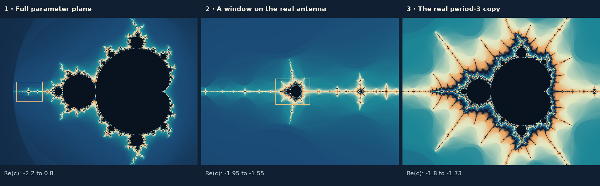

Structure within structure
Minibrots, tuning & renormalization
A tiny Mandelbrot-shaped island is more than a visual coincidence. It is the parameter portrait of a slower, local version of the same quadratic dynamics. Its surrounding filaments tell the story of where that copy lives.


What is a minibrot?
A minibrot, also called a baby Mandelbrot set or little Mandelbrot copy, is a subset of the Mandelbrot set that reproduces its organization of components and boundary points through a continuous, reversible correspondence. Mathematicians call that correspondence a homeomorphism. This is a claim about topology: which pieces connect, and how points fit together. It does not require identical angles, lengths, or curvature.
A round bulb by itself is not a whole minibrot. A complete copy includes a distinguished main component, its attached components of many periods, and a corresponding collection of boundary points. A screenshot may expose only a few of these features. The straightening construction gives a precise meaning to the copy even when its finer details are below the image resolution. Lyubich’s treatment of little Mandelbrot copies (§§40–43 of his book) develops this correspondence.
To read a zoom, first locate the largest recognizable component in the small structure. Look for its attachment point and the succession of smaller bulbs. Then separate that internal organization from the extra strands around it. Those strands belong to the larger Mandelbrot set in which the copy is embedded. A minibrot has a local identity and a surrounding context.
A concrete example: the real period-three copy
The conspicuous miniature on the left antenna has a main component of period three. Its center is approximately c = −1.754877666. A center is a parameter at which the critical point 0 lies on the attracting cycle itself. In this case the three-step calculation is
The center is the real root of c3 + 2c2 + c + 1 = 0, as the periodicity chapter derives under centers: an exact target for exploration, independent of colors or visual resemblance.
Near that center, the critical orbit returns near its starting position every three steps. A nearby initial point can travel through three separated neighborhoods before coming back close to where it began. Observe only every third iterate, and the motion has a simpler description. The small copy’s main component represents a fixed-point attractor for this three-step observation, even though the original map has a three-cycle.
Why a quadratic map reappears
Write fc(z) = z2 + c and let gc = fc3. Here the superscript 3 means composition three times. Direct expansion near z = 0 gives
b(c) = (c2 + c)2 + c, A(c) = 4c(c2 + c).
At the center, b = 0 and A ≠ 0. Set w = Az. In the new coordinate, the leading terms of the return map become w ↦ w2 + Ab. Small changes of the original parameter therefore produce a local quadratic family again. The neglected higher powers, together with the nonlinear way A and b depend on c, are why the copy is distorted rather than an exactly scaled replica.
There is also a distinction between global and local degree. The full three-step polynomial has degree eight. Restricted to an appropriate neighborhood of its critical return, it can act as a two-to-one map onto a larger neighborhood. This restricted behavior, rather than the degree of the full polynomial, is what the next construction captures.
Renormalization and straightening
A quadratic-like map is a holomorphic, proper degree-two map g: U → V, where U and V are topological disks and the closure of U is compact and contained in V. “Proper” ensures that points cannot approach the boundary of the domain while their images remain in a compact part of the target. Its filled set consists of points whose repeated returns remain in U.
Renormalization selects such a restriction of an iterate fp. The Douady–Hubbard straightening theorem associates it with an actual quadratic polynomial; when the filled set is connected, the normalized polynomial w2 + c′ is unique. The equivalence preserves the local dynamics while allowing controlled geometric deformation. Applying this to suitable parameter families explains the little Mandelbrot copies. Douady and Hubbard’s original paper provides the theorem and construction.
Think of two operations: first wait for a return, then use coordinates appropriate to the small neighborhood. Repeating those operations reveals nested dynamics. The original orbit can have complicated excursions between returns while its local return behavior belongs to the familiar quadratic family. This is why similar organizational patterns can recur at very different locations and scales. Renormalization is also the route to the main open question: the local connectivity of M can fail only at parameters that are renormalizable infinitely often (open questions).
Primitive and satellite copies
| Type | How its main component is situated | Example |
|---|---|---|
| Primitive | Its root is not shared with a hyperbolic component of smaller period. The main component always has a cusp at its root, though it may be too small to see. | The real period-three copy near −1.75488. |
| Satellite | Its main component meets a lower-period component at the satellite component’s root. It arises through a rational bifurcation. | The copy whose main component is the period-two disk centered at −1. |
This distinction also appears in the dynamics: the little filled Julia sets of a primitive renormalization are disjoint, whereas those of a satellite renormalization touch one another at periodic points. For a copy attached directly to the main cardioid they all share one point, the α fixed point; for a copy of period pq attached to a component of period p, they meet q at a time at the p points of a cycle. At a satellite attachment with internal rotation number r/q in lowest terms, a parent component of period p gives rise to a component of period pq. The whole attached limb contains much more than that one component. McMullen’s renormalization discussion (§§7.2–7.4) illustrates the distinction with examples of both kinds.
A technical convention at the boundary: the renormalizable parameters of a satellite copy correspond to the Mandelbrot set without its cusp 1/4, so the copy’s root is missing. Usually the root is added to speak of the closed little Mandelbrot copy. Avila and Lyubich describe this convention in their discussion of renormalization.
Visual shape is a useful clue, not a definition. A satellite copy’s distinguished component may look disk-like even though it corresponds to the main cardioid of the large set. Topological correspondence does not preserve a cusp’s geometry. For the exact main cardioid and the meaning of internal angles, see Cardioids, bulbs & periods.
Tuning: inserting one pattern into another
Tuning describes the embedding of the entire Mandelbrot set into a chosen little copy. If that copy’s main component has period p, a period-q component in the original set corresponds to a period-pq component in the copy. Its local return orbit makes q returns, each requiring p original iterations. Tuning also encodes this substitution in the binary descriptions of external angles. Zakeri’s background section states the period rule and angle substitution.
For the real period-three copy, the recognizable main component has period 3; the analogue of the large period-two bulb has period 6; the period-four descendant has period 12. A small structure shaped like the main cardioid therefore need not represent period one. “Main” is relative to the copy being viewed.
Nested tuning repeats this bookkeeping. A period-three copy inside a period-five copy has a distinguished component of period 15. The product records the number of original steps per return at that level; it says nothing about the size of the copy.
Tuning on external angles
Tuning is also arithmetic on external angles. Let a component have the root angles .(u0) < .(u1), written in binary with repeating blocks u0 and u1 whose length p is the period. In the binary expansion of any angle t, replace each digit 0 by the block u0 and each 1 by u1. If the ray at angle t lands at a point of the Mandelbrot set, the ray at the new angle lands at the corresponding point of the copy (Zakeri, §2; the rule is Douady’s).
| Copy grown from | Blocks u0, u1 | Angle t | Tuned angle | What it is in the copy |
|---|---|---|---|---|
| Period-two disk (basilica) | 01, 10 | 1/3 | 2/5 | Root of the period-four bulb, c = −5/4 |
| Period-two disk | 01, 10 | 1/7, 2/7 | 22/63, 25/63 | Root of the upper period-six bulb on the disk, c = −9/8 + (√3/8)i |
| Real period-three copy (airplane) | 011, 100 | 1/3, 2/3 | 4/9, 5/9 | Root of its period-six bulb |
| Rabbit component | 001, 010 | 1/3, 2/3 | 10/63, 17/63 | Root of its period-six bulb |
For example, the period-two disk has root angles 1/3 = .(01) and 2/3 = .(10). The angle 1/3 = .(01) becomes .(0110), which is 6/15 = 2/5. The root angles of the airplane, 3/7 = .(011) and 4/7 = .(100), turn 1/3 into .(011100) = 28/63 = 4/9. Tuning by the period-two disk again and again climbs the period-doubling cascade: 1/3, 2/5, 7/17, 106/257, 27031/65537, …, the angles of the roots of the components of period 2, 4, 8, 16, 32. They converge to
whose digits form the Thue–Morse sequence, since the substitution 0 → 01, 1 → 10 is exactly the rule that generates it. The rays at angles τ and 1 − τ are the only rays whose impressions contain the Feigenbaum point at the end of the cascade (Zakeri, Theorem 3.3 and Lemma 3.4). The impression of a ray is the set of boundary points approached from outside by points whose angle tends to the ray’s angle and whose potential tends to zero.
Decorations, antennas and apparent islands
The connected pieces left when a little copy is removed from the full Mandelbrot set are its decorations. A theorem says that for any fixed positive size, only finitely many of these pieces have diameter at least that size. This controls how decorations accumulate around a copy; it does not say that every visible strand is equally small or regularly spaced. Dzmitry Dudko’s decoration theorem makes the statement precise.
In an image, the surroundings may look like branching trees, spirals, thin antennas, or strings of smaller copies. “Antenna” and “filament” are useful visual terms rather than one universal classification of local geometry. Narrow connections can disappear between pixel centers. A miniature that seems isolated in a raster image is consequently not evidence for a disconnected Mandelbrot set.
Close to a minibrot, the decorations often gather into an embedded Julia set: an island that copies a Julia set, with the minibrot at its center and its pattern repeated 2, 4, 8, … times around it.
When an apparent gap matters, increase both the resolution and the iteration limit, and remember that a dark pixel only means “did not escape within this computation”; the gallery’s image-method notes say more.
Self-similarity and universality
Three different ideas often share the phrase “self-similar.” A little copy can reproduce the set’s topology. A sequence of magnified neighborhoods can approach a limiting shape, which is asymptotic similarity. An exact geometric similarity would instead require the same picture after a single fixed scale, rotation, and translation. These claims are not interchangeable.
Near a Misiurewicz parameter, repeated magnification by the multiplier of its repelling cycle reproduces the picture of the Mandelbrot set more and more exactly, and it looks like the Julia set there (Tan Lei’s similarity theorem). This is asymptotic similarity: finite zooms are only approximately alike.
Another form of repetition is Feigenbaum universality. Along the real period-doubling cascade, the distances between the centers of successive components, of periods 1, 2, 4, 8, …, shrink by ratios that approach δ ≈ 4.669201609:
| Period | Center | Ratio of the last two gaps |
|---|---|---|
| 1 | 0 | |
| 2 | −1 | |
| 4 | −1.3107026 | 3.2185 |
| 8 | −1.3815475 | 4.3857 |
| 16 | −1.3969454 | 4.6009 |
| 32 | −1.4002531 | 4.6551 |
| 64 | −1.4009620 | 4.6661 |
| 128 | −1.4011138 | 4.6685 |
| 256 | −1.4011463 | 4.6691 |
Each center is a root of a polynomial equation, found here with Newton’s method; the first ratio, 3.2185, compares the gap from 0 to −1 with the gap from −1 to −1.3107. Other families of maps with a single quadratic maximum, such as x ↦ r sin(πx), show the same limiting ratio; this is what “universal” means here, and the ratio, not the parameter’s coordinate, is the shared quantity. The scaling comes from renormalization: near the critical point, the second iterate of the map at one stage of the cascade, rescaled, behaves like the map at the stage before. Feigenbaum’s original paper explains the mechanism, and Lyubich’s work on Feigenbaum–Coullet–Tresser universality proves it.
A second theorem also goes by the name of universality. McMullen proved that copies of the Mandelbrot set, distorted only slightly, appear in the parameter space of every family of rational maps that depends holomorphically on its parameters, wherever the dynamics changes (in special families the copies are of a higher-degree Multibrot set instead); Beyond z2 + c states it precisely. Its mechanism is the renormalization and straightening of the earlier section, not the scaling of period doubling.
Check yourself
In the real period-three copy, what is the period of the component that plays the role of the period-two disk? And of the period-four bulb?
Periods multiply: 3 × 2 = 6 and 3 × 4 = 12.
Tune the angle 2/3 = .(10) by the period-two disk, whose blocks are 01 and 10. Where does the new ray land?
Replacing 1 by 10 and 0 by 01 gives .(1001) = 9/15 = 3/5. The rays at 2/5 and 3/5 land together at the root of the period-four bulb, −5/4, the image of −3/4 in the copy grown from the disk.
From the table of centers, estimate the next ratio after 4.6691. What number do the ratios approach?
They approach δ = 4.6692016…, so the next ratio is about 4.6692. The approach is fast: each step brings the ratio about δ times closer to its limit.
Is a primitive copy attached to a component of smaller period?
No. Its main component meets no component of smaller period at its root, which is a cusp. Satellite copies are the ones attached to a parent component, like the period-two disk on the main cardioid.
Sources and further reading
- Adrien Douady and John Hubbard — On the dynamics of polynomial-like mappings (1985) — the original straightening and small-copy construction.
- Mikhail Lyubich — Conformal Geometry and Dynamics of Quadratic Polynomials — detailed theory of renormalization and little copies.
- Saeed Zakeri — External rays and the real slice of the Mandelbrot set — tuning and periods, with background in section 2.
- Dzmitry Dudko — The Decoration Theorem for Mandelbrot and Multibrot Sets — the structure of attached decorations.
- Mikhail Lyubich — Feigenbaum–Coullet–Tresser universality and Milnor’s Hairiness Conjecture — rigorous renormalization and universality theory.
Sources checked on 20 October 2026.